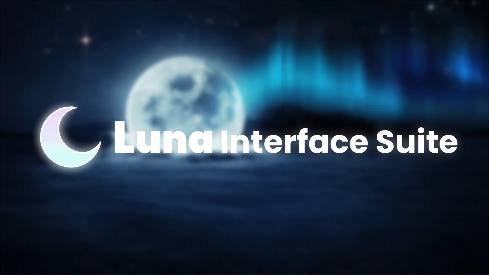

Copia
Un toque y el loader queda en el portapapeles.
UN SCRIPT DE HIDJCJGG
Copias una línea, la ejecutas y aparece la interfaz. Sin vueltas.
Hecho por hidjcjgg

EL SCRIPT
Este es el loader oficial. Cópialo y ejecútalo desde un entorno compatible con `loadstring` y `HttpGet`.
loadstring(game:HttpGet("https://raw.githubusercontent.com/NcMay67/Luna-Interface-Suite/master/main.lua"))()ASÍ DE FÁCIL
Un toque y el loader queda en el portapapeles.
Pégalo en tu entorno compatible mientras juegas.
NC HUB carga y muestra su interfaz.
SI TE DA CURIOSIDAD
NC HUB vive en GitHub. Puedes echarle un vistazo cuando quieras.